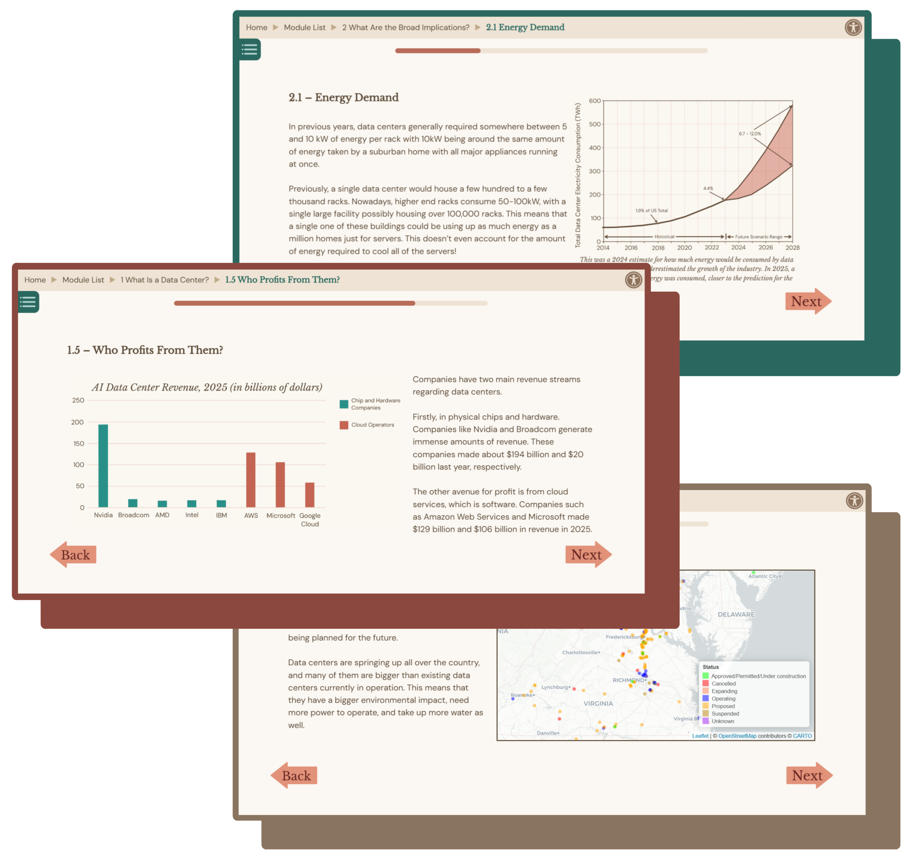
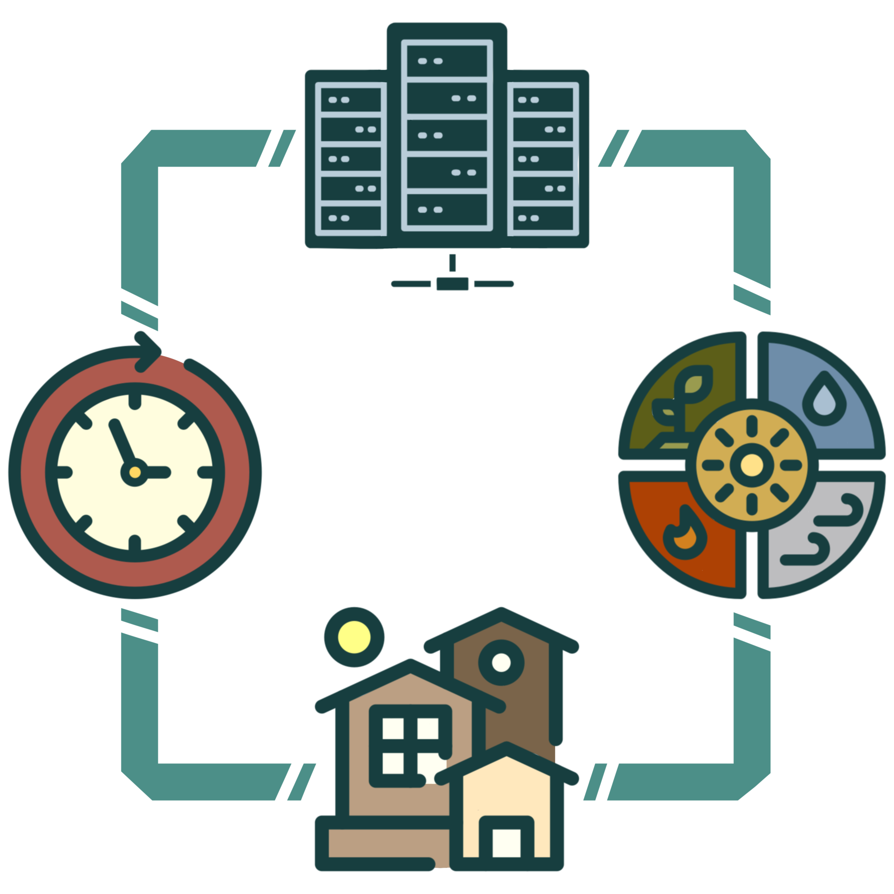

Data CenterLearning Modules
This website aims to raise awareness of the growing impact of data centers and the challenges they pose to both local communities and the broader public. While data centers play a critical role in today’s digital world, they can also strain resources, affect surrounding environments, and influence quality of life both nearby and beyond. These learning modules are designed to provide a clearer understanding of these impacts and what they mean for society as a whole.


Course Overview
This course is broken down into four modules:
Module 1 introduces the user to data centers. What are they? What do they do? We focus on what components make up a data center, how many there are, and their involvement in systems the user might be familiar with.
In Module 2, we expand on the operations of a data center to explore some of the underlying
drawbacks of the data center boom, such as excessive energy consumption and water usage.
Module 3 focuses on the local effects of data centers. We challenge the user to think about how their community might be affected by the construction of a data center near them.
Module 4 looks to the future and introduces the user to resources to stay aware of news involving
data centers as well as petitioning their local representatives about legislation
regarding data centers. Knowing the benefits, uses, and drawbacks of data centers,
they may use the resources in this module to help guide responsible AI usage.